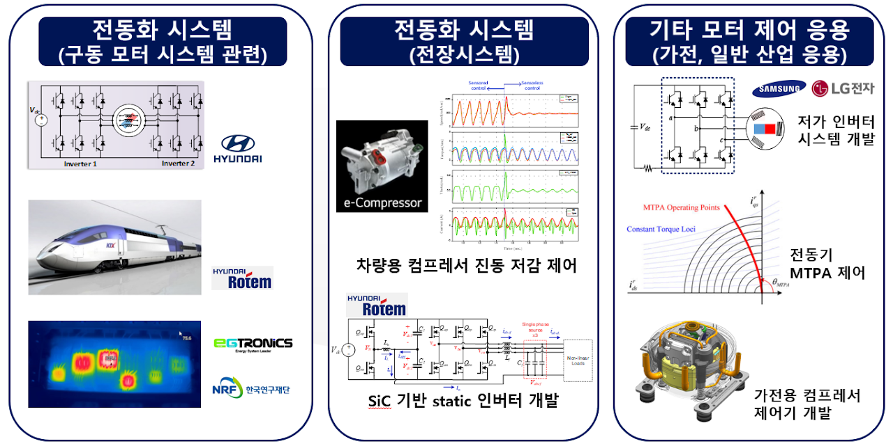

Electric Mobility
Electric propulsion and drive systems for road and rail vehicles.
Electric drives, power conversion, and monitoring for mobility and energy systems.
Electric propulsion and drive systems for road and rail vehicles.
Control algorithms and software for induction and permanent magnet motor drives.
Power converter topologies, modulation strategies, and control.
Monitoring techniques for power systems and temperature estimation for motors and inverters.

연구 책임 (국민대)
연구 책임 (국민대), 공동 연구 (이화여대)
현대자동차 · 참여기관 (국민대, 이화여대), 연구 책임
현대모비스 · 참여기관 (국민대), 연구 책임
현대로템 · 참여기관 (국민대), 연구 책임
연구 책임 (국민대)
현대자동차 · 참여기관 (국민대), 연구 책임
현대로템 · 참여기관 (국민대), 연구 책임
현대로템 · 참여기관 (국민대, 명지대), 연구 참여
현대로템 · 참여기관 (국민대), 연구 참여
현대로템 · 참여기관 (명지대), 연구 책임
현대자동차 · 참여기관 (고려대, 명지대), 연구 참여
현대로템 · 참여기관 (명지대), 연구 책임
EGtronics · 참여기관 (명지대), 연구 책임
삼성전자 · 참여기관 (서울대, 명지대), 연구 참여
한국연구재단 · 참여기관 (명지대), 연구 책임
현대로템 · 참여기관 (서울대, 명지대), 연구 참여
한국연구재단 · 참여기관 (명지대), 연구 책임
현대로템 · 참여기관 (서울대, 명지대), 연구 참여